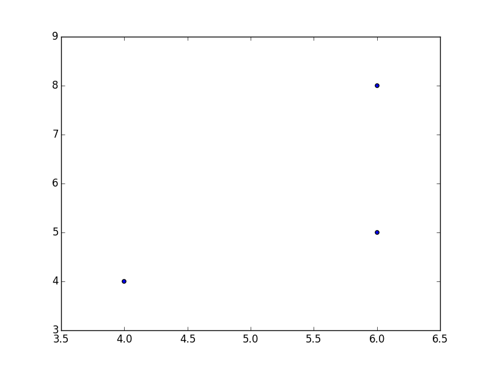

Open source
Introduction
Why I love emacs
what is emacs?
- an editor which was designed in the 70s
- it is open source so the whole world can contribute
- unlike MS Word, the people "working on" emacs are "like us"
- I use "org-mode" developed by Carsten Dominik at UvA
- with customizations by John Kitchin at Carnegie Mellon
- these people:
- type papers in latex
- bibliographies in bibtex: C-c ]
- work with data
- program
- have admin tasks: someone walks in and you have to remember something: C-M-r
- teach students: https://github.com/jkitchin/techela
why is it great?
latex stuff
- this is an org-file but the latex things work in latex as well
- use M-x org-cdlatex-mode
- add equation
and here another equation
\begin{equation} \label{eq:5} ax^2+bx+c=0 \end{equation} \begin{equation} \label{eq:6} ax^2+bx+c=0 \end{equation}- refer to an equation with C-c (
- export to latex: C-c C-e
- but you can also export to html and reveal
- export with ox-manuscript: generates submission letter as well
- easy to add links e.g. to a presentation at slide Data science
- or to a bib tex file
- add bibitex entry from doi-identifier
highlighting
- most latex editors do not allow for meta data in latex:
- so most people make comments in bold in latex and pdf; then they send it to a conference…
- Use M-x ov-highlighter/body
- So here we have some text.
- and here we add some comments that will not be exported to pdf
tables
- Latex is great, but not with tables…
- you can do excel stuff with it: C-c } to see "addresses"
| col 1 | col 2 | col 3 | mean |
|---|---|---|---|
| 6 | 5 | 7 | 6 |
| 6 | 8 | 9 | 7.6666667 |
| 4 | 4 | 5 | 4.3333333 |
import pandas as pd import matplotlib.pyplot as plt df = pd.DataFrame(dataset) plt.scatter(df[0],df[1]) plt.savefig('table.png')

To do lists
TODO bla bla bla; use C-c C-t
- to add a date: C-c C-s
Conclusion
- point is not that you have to use emacs
- but